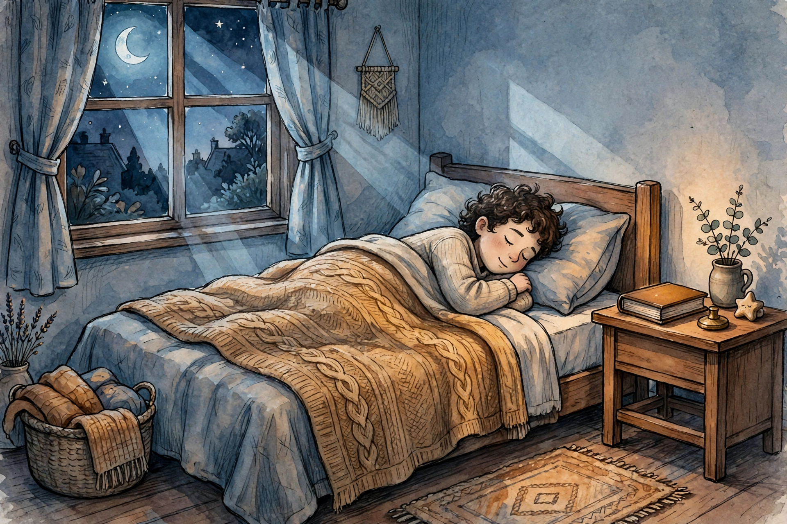
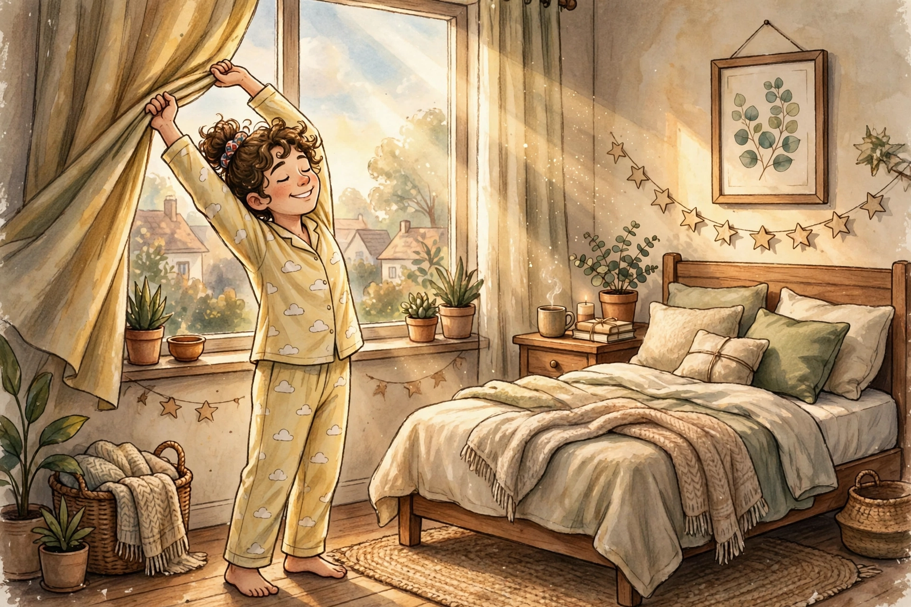

29 September 2026
Tidur: Upgrade Gratis yang Diremehkan
Setiap malam kamu dapat upgrade gratis untuk otak, badan, dan mood — tapi kebanyakan orang memperlakukannya kayak layanan murahan: dipotong jamnya, diganggu layarnya, ditambal kopi. Padahal tidak ada suplemen atau rutinitas pagi yang bisa menyaingi satu malam tidur yang benar.

Kenapa tidur adalah "upgrade gratis"
Saat kamu tidur nyenyak, otakmu tidak mati — ia lembur. Sistem pembersih otak membuang sisa metabolisme yang menumpuk seharian, memori dipindah dari penyimpanan sementara ke arsip jangka panjang, dan pusat emosi diotak di-reset supaya besok kamu tidak meledak gara-gara hal sepele.
Sebaliknya, kurang tidur itu pajak yang diam-diam memungut dari semua sisi: fokus turun sampai setara orang yang mabuk ringan, hormon lapar naik (kamu jadi gampang laper padahal baru makan), dan sistem imun melemah karena protein-protein pelawan infeksi memang diproduksi saat kamu tidur. Semua perbaikan ini gratis. Syaratnya cuma satu: tidur yang benar.
Tiga mitos yang perlu dibongkar
Mitos 1: "Utang tidur dibayar weekend." Peneliti di University of Pennsylvania membatasi partisipan tidur 6 jam per malam selama dua minggu. Performa kognitif mereka turun terus — dan yang menyeramkan, mereka tidak sadar. Rasa kantuk yang mereka laporkan stabil ("udah biasa"), padahal skor tes perhatiannya makin anjlok. Setelah weekend tidur panjang, performa membaik tapi tidak pernah kembali ke baseline. Studi lain di jurnal Current Biology menemukan kerusakan metabolisme akibat kurang tidur juga tidak pulih dengan tidur balas dendam. Bonus: tidur jam 2 pagi di Sabtu lalu bangun jam 6 di Senin menciptakan social jet lag — jam tubuhmu seperti habis naik pesawat tanpa pernah pergi ke mana-mana.
Mitos 2: "Begadang diganti kopi." Kafein bekerja dengan memblokir adenosin, molekul yang membangunkan rasa kantuk sepanjang hari. Ia menutupi rasa kantuk, bukan menghapus utangnya. Dan yang jarang disadari: kafein diam-diam memangkas porsi tidur nyenyakmu, bahkan di malam-malam ketika kamu merasa "tidur nyenyak kok".
Mitos 3: "Gue emang night owl." Kronotipe (kecenderungan alami pagi/malam) memang ada dan sebagian diwariskan. Tapi sebagian besar "night owl" modern adalah hasil rekayasa lingkungan: lampu terang dan layar sampai tengah malam. Cahaya pagi yang cukup bisa menggeser jam tubuh lebih awal — artinya sebagian "bawaan lahir" itu sebenarnya "bawaan lampu".

Aturan cahaya: 10 menit pagi vs 1 jam malam
Cahaya adalah remote control jam tubuhmu. Aturannya sederhana dan gratis:
- Pagi: kejar matahari. Dalam 30–60 menit setelah bangun, keluar rumah 5–10 menit (15–30 menit kalau mendung). Cahaya pagi menghentikan produksi melatonin dan menyetel timer internal: rasa kantuk akan datang dengan sendirinya sekitar 14–16 jam kemudian. Lewat jendela tidak cukup — kaca memangkas intensitas cahaya jauh di bawah yang dibutuhkan otak.
- Malam: bikin matahari tenggelam buatan. 60–90 menit sebelum tidur, redupkan lampu dan hangatkan warnanya. Jauhkan layar — dan ingat, isi layar sering lebih merangsang daripada cahayanya. Scroll yang bikin emosi jarang berakhir dengan tidur nyenyak.
Ada rumus ringkas yang dipakai para dokter tidur, aturan 10-3-2-1-0: 10 jam sebelum tidur stop kafein, 3 jam stop makan berat, 2 jam stop kerja, 1 jam stop layar, 0 kali pencet snooze besok paginya.
Suhu, suara, dan ritual 30 menit
Tubuhmu perlu mendingin untuk memulai tidur — suhu inti yang turun adalah sinyal "saatnya tidur". Itu sebabnya kamar yang sejuk (sekitar 16–19°C) membantu, dan mandi air hangat 1–2 jam sebelum tidur justru manjur: begitu keluar dari kamar mandi, tubuhmu mendingin dan rasa kantuk datang mengikuti.
Soal suara: yang mengganggu bukan bunyi, tapi perubahan bunyi. Suara monoton dan konsisten — kipas angin, white noise — menutupi bunyi-bunyi kecil yang tiba-tiba. Hening total malah bikin tetesan keran terdengar seperti genderang.
Dan ritual wind-down tidak perlu 2 jam ala influencer. 30 menit cukup: lampu redup, HP di luar jangkauan (atau mode pesawat dan jauh dari tangan), lalu pilih satu — baca buku fisik, journaling 5 menit, atau stretching ringan. Intinya: kasih tahu tubuhmu bahwa hari sudah selesai.
Kafein punya jam malam
Waktu paruh kafein rata-rata 5–6 jam — artinya separuh dosis masih beredar di darahmu 5–6 jam setelah tegukan terakhir. Rentangnya lebar, 1,5 sampai 9,5 jam, tergantung gen dan kondisi tubuhmu. Hitung sendiri: kopi 200 mg jam 3 sore berarti ~100 mg masih aktif jam 8–9 malam, dan ~50 mg masih ada jam 2–3 pagi.
Dalam studi terkontrol, 400 mg kafein yang diminum 6 jam sebelum tidur tetap memangkas total tidur lebih dari 1 jam — dan partisipannya tidak merasa "terjaga". Sebuah meta-analisis tahun 2023 menghitung: secangkir kopi sebaiknya diminum sekitar 8,8 jam sebelum tidur supaya tidak memotong durasi tidur. Aturan praktisnya: jam malam kafein = 8–10 jam sebelum tidur. Tidur jam 11 malam? Kopi terakhir jam 1–3 siang. Porsi kafeinmu pun sebaiknya di-front-load: sebagian besar sebelum tengah hari, sore ke malam nol.
Power nap yang benar
Tidur siang itu senjata — kalau dipakai dengan benar. NASA pernah meneliti pilot yang tidur siang rata-rata 26 menit: kewaspadaan naik sampai 54% dan performa kerja naik 34% dibanding yang tidak tidur siang.
Aturannya: maksimal 30 menit, sebelum jam 3 sore, pakai alarm. Lewat dari 30 menit kamu masuk ke tidur dalam — bangun di tengahnya bikin kamu lebih grogi daripada tidak tidur sama sekali (namanya sleep inertia, dan butuh 30–60 menit untuk hilang). Pengecualiannya: kalau kamu punya 90 menit penuh, sekalian selesaikan satu siklus tidur utuh.
Sebaliknya, tidur siang 2 jam di sore hari adalah sabotase: ia menghabiskan "tekanan tidur" yang seharusnya menumpuk untuk malam hari, sehingga jam 11 malam matamu masih melek.
Jam bangun yang konsisten mengalahkan durasi
Ini temuan yang jarang dibahas: studi tahun 2024 di jurnal SLEEP terhadap 60.977 orang dewasa menemukan bahwa keteraturan jadwal tidur memprediksi risiko kematian lebih kuat daripada durasi tidur. Orang dengan jadwal paling teratur — tidur dan bangun dalam jendela sekitar 1 jam setiap hari — punya risiko jauh lebih rendah dibanding yang jadwalnya acak-acakan, walaupun total jam tidurnya sama.
Praktiknya: pilih satu jam bangun, pertahankan 7 hari seminggu. Weekend boleh geser, maksimal 1 jam. Jam tidurmu boleh fleksibel mengikuti kantuk — tapi jam bangun adalah jangkar yang tidak boleh goyang. Ditambah cahaya pagi setiap hari, jam tubuhmu akan belajar datang tepat waktu dengan sendirinya.
Checklist kamar tidur malam ini
- Lampu diredupkan 1 jam sebelum tidur, layar disingkirkan
- HP di luar jangkauan tangan (atau mode pesawat)
- Kamar gelap — tutup lampu-lampu indikator kecil itu — dan sejuk
- Kopi terakhir sudah lewat 8 jam yang lalu
- Ritual 30 menit: mandi hangat, baca, atau journaling
- Besok bangun di jam yang sama seperti hari ini
Tidak perlu semuanya sempurna malam ini. Pilih dua yang paling gampang, lakukan seminggu, rasakan bedanya — lalu tambah lagi. Tidur adalah satu-satunya upgrade yang gratis, legal, dan bekerja setiap malam. Sayang kalau diremehkan.